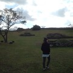

브런치 본문
글이 작품이 되는 공간, 브런치
브런치에 담긴 아름다운 작품을 감상해 보세요.
그리고 다시 꺼내 보세요.
서랍 속 간직하고 있는 글과 감성을.
- [사전 안내] SNS '공유 수' 기능 종료 Notice
EDITOR PIC


BRUNCH KEYWORD
키워드로 분류된 다양한 글 모음
B R U N C H W R I T E R S
브런치 추천 작가
-
쎄인트의 책 이야기
칼럼니스트
의료인. 퇴근 후 서재에 출근해서 책을 읽고 글을 씁니다. 북리뷰 위주로 글을 올립니다. 쎄인트의 冊이야기.
-
아홉시
크리에이터
세상을 알아가는 나만의 시각, 지식 구독 서비스 아홉시��. [하루 두 편 지식 콘텐츠 무료 공개]
-
짱주
강연자
초보아빠의 육아에세이 / 오늘이 아깝다. 오늘의 작은 기록으로 시아는 시아답게 자라고, 아빠는 더욱 아빠가 되어간다.
-

진저
기자
11년간 기자로 일했습니다. 지금은 퇴사! 브런치 필명인 진저는 생강 아닙니다:D ~
-
일리브로
작가지망생
"좋은 책 읽기는 자신을 포함한 모두를 구한다."(다니엘 페나크). 책과 인문학 연구자.
-
컬처로그
디페랑스 편집장
인문예술채널 컬처로그 / 디페랑스, 다반 출판사 민 편
 이면지
이면지
 홍차
홍차
 채원
채원
 이형준
이형준
 Ohms
Ohms
 nay
nay
 belle
belle
 소보로
소보로
 글쓰는 메이
글쓰는 메이
 민용준
민용준
 구기자
구기자
 phil lee
phil lee

RECOMMENDED ARTICLES
갓 구워낸 따끈따끈한 추천글을 만나보세요
-
강수지 언니가 부러웠을 뿐인데

나는 빈혈이 있다. 어릴 땐 안 그랬는데 5년 전부터 생리할때만 되면 너무 어지럽고 심할 땐 걸을 수도 없었다. 그 때는 그냥 생리 전 증후군이겠거니 하고 넘겼는데 생리할때가 아닌데도 메슥거리고 티비에 나오는 것처럼 픽 쓰러지는 바람에 병원에 갔다가 알았다. ‘오 마이 갓! 내가 빈혈이라니’ 내가 어릴 땐 드라마에 종종 빈혈인 여주인공들이 나왔었는데
by 민작가 -
집사 간택의 순간

무더운 7월 말 어느 날 집에 들어오는데 아파트 공동현관 근처에서 작은 울음소리가 들렸다. '삐약삐약' 내지는 '삐용삐용' 정도의 느낌이었다. 계단 옆을 보자 주차된 차량 바퀴와 경계석 사이에서 나를 올려다보며 울고 있는 새끼 고양이가 보였다. 기껏해야 세 달 정도의 월령으로 보이는 크기에 예쁜 삼색이였다.* 어미나 형제와 떨어졌는지 쉬지 않고 울어대고 있
by 스멀스멀 -
요즘 초딩이 노는 법
우리 큰 아이 학교는 등교 수업과 온라인 수업을 병행하고 있다. 온라인 수업 시에는 줌(Zoom)이라는 매체를 사용하는데 1년 넘게 사용하다 보니 우리 아이를 비롯한 다른 아이들도 모두 능숙하게 사용하는 편이다. 줌 사용 초창기에 큰 아이는 나에게 회의실을 개설한 후 호스트를 자기에게 넘겨 달라고 했다. 아이가 선생님이고 내가 학생이었다. 아이는 선생님이
by JOO -
가을은 바다를 통째로 먹는 계절

’ 얼마 전 노량진수산물도매시장 새벽시장을 다녀왔다. 새벽 4시가 조금 넘은 시간 이미 경매가 한창이었고 낙찰된 어류는 바로 옆 도매시장에서 날개돋인 듯 팔렸다. 식재료를 준비하는 식당 주인, 싸게 횟감을 사려는 일반인들로 새벽 도매시장은 생동감 있게 북적였다. 겨울로 가는 길목인 가을엔 유난히 바다생물 맛이 좋을 때다. 다양한 종류가 나올뿐더러 선도도 좋
by 유성호의 맛있는 동네 산책 -
날 만지고 가라!

오랜만에 왔으니 자기를 만지고 가라며 내 앞을 가로막는 맹자씨.
by 이용한 -
독일에서 고장 난 남편의 핸드폰

가족과 함께 라인강에 바람을 쐬러 나갔다가 장을 보고 집으로 돌아왔다. 독일은 5시 전에 해가 떨어지니 빨리 모든 것을 마무리하고 집에 돌아와야 한다. 아이들은 옷을 갈아입고 나는 장 본 짐을 정리하고 저녁 준비를 하고 있는데 남편의 다급한 소리가 들렸다. 핸드폰이 안된다는 것이다. 액정이 나간 거 같다고 했다. 당장 출장도 가야 하는데 남편도 꽤 당황한
by su -
안개 낀 냥독대

홀연히 안개를 뚫고 온 고양이들이 태연하게 냥독대에 앉아서 자작나무 잎 지는 소리를 듣는다. 가을 깊은 산중에 이따금 새가 날아들고, 단풍은 절정도 없이 가만히 물들었다.
by 이용한 -
배추찜쌈
엊저녁에 갑자기 딸들이 삼겹살이 먹고 싶다는 요구에 퇴근길이었던 저냥반은 집앞 마트에 들려 삼겹살을 한 팩과 함께 귀가 하셨다. 그 바람에 며칠 전부터 베란다에 나뒹굴고 있던 배추 한 포기가 갑자기 생각이 나서 잘 씻어서 삼겹이와 함께 쌈을 싸서 먹었는데, 노란 속이 어찌나 달고 맛나든지 깜짝 놀라며 이래서 가을 배추라는 말이 따로 있는 거구나 했다. "
by 이혜주 -
늦깎이 공무원이 몰려온다.

내가 생각하는 늦깎이 공무원의 나이는 40대 이상이다. 마흔이 넘어보니 30대는 청춘으로 느껴져 앞에 3자 붙은 나이는 제외하기로 했다. 일단 지방직, 국가직 공무원 시험이 끝난 후 기사를 보면 연령별 통계가 꼭 나와 있다. 기사만 봐도 40대 이상의 합격자 수는 증가하고 있다. 사이버고시센터에서 제공하는 통계자료를 통해 최근 3년간 늦깎이 국가직 공무원
by 은반지 -
믹스커피 마시려고 밥 먹는 엄마
"나는 믹스커피 마시려고 아침밥 먹는다. 밥은 먹기 싫어도 믹스커피는 먹고 싶어." 엄마의 무한한 사랑을 받고 있는 주인공은 믹스커피이다. 달달한 맛은 엄마의 모든 시름과 화병을 녹여주는 강력한 힘을 가지고 있다. 하긴 나도 카페라테를 마시려고 아침밥을 먹으니 엄마와 나는 꽤 닮았다. 예전에 스타벅스에서 여고생들의 대화를 들은 적이 있다. 아메리카노를 마
by 인어수인 -
어머님은 귤 가져다 먹으라 하셨어

어머님과 나에게는 큰 차이점이 있다. 어머님은 남의 도움을 받을 수만 있다면 어떻게든 받으려시는 반면, 난 어떻게든 남의 도움을 받지 않고 살아보려는 쪽이다. 웬만하면 그냥 혼자 하시지, 굳이 사람을 불러서 도움을 받으려 하시는 어머님을 처음엔 이해하지 못했다. 나중이라고 이해가 다 되는 건 물론 아니다. 귤을 따지 않기로 한 올해 가을, 지인에게
by 강유라 -
시어머니가 얘기 좀 하자고 하셨다
집에 돌아가려고 짐을 싸던 중이었다. 1박 2일을 머물다 와도 가족이 움직이면 소소한 짐을 쌌다 푸는 게 일이다. 거의 20년에 이르니 예전처럼 오래 걸리진 않는다. 다만 시댁에서 집에 돌아갈 때는 신경이 쓰인다. 아이들 어릴 때 옆에서 칭얼대는 애들 때문에 정신이 없어서 칫솔이니, 장난감이니 사소한 물건을 두고 오면 시어머니는 꼭 "얘, 너 또 물건 두고
by 은수 -
돈까스의 계절

며칠 전, 첫눈이 내렸다. 원래 가을이 이다지도 짧았었나? 정말이지 '봄, 여어어어름, 갈, 겨어어어울'이다. 그래도 눈이 내리던 그날 아침, 창밖으로 제법 쏟아지는 눈송이를 보며 나는 또 설레었다. 내가 제일 좋아하는 계절이다. 심한 수족냉증 때문에 겨울만 되면 손발이 차서 고생을 하고, 10월부터 수면양말을 신기 시작하면서도 여전히 나는 겨울이 참 좋다
by 서보통 -
엄마의 30년 주부 경력 은퇴를 축하드립니다.

엄마의 류머니티즘은 차츰 나아지고 있다. 그래서 나름 만족하며 엄마는 살고 계신다. 문제는 집안일이다. 그래서 엄마는 궁여지책으로 자신의 루틴을 바꾸기로 하셨다. 그래서 난 엄마에게 더 이상 손으로 뭔가를 하시지 말라고 했다. 기계가 있어도 기계를 하시지 안 쓰시니, 옆에서 보면 답답하다. 1년 전에 로봇 청소기를 두대를 사드렸다. 엄마는 처음에는 "좋네"
by 몽접 -
세상의 유일한 공짜

"아들, 아들 좋아하는 생김치 해놨어, 밥 먹고 가" 이번 주 수요일 즈음이었던 거 같다. 어머니와 통화 중에 김장김치를 받아 가라는 말씀을 하셨다. 사실 나는 집에서 밥을 먹는 경우는 거의 없다. 가족들의 경우도, 큰애나 조금 먹는 편이고(많이도 못 먹는다.) 둘째는 아직 매운 김치를 먹지 못해서 김치를 냉장고에 쟁여놔도 그다음 해에 시체(?)로 발견되기
by 빛담 -
잃어버린 양심
어렸을 때 엄마는 밥이 모자라면 콩나물을 듬뿍 사와 김치를 조금 넣고 콩나물 김치죽을 끓여 주었다. 밥은 별로 없고 콩나물하고 김치만 있는 탓에 나는 콩나물이 싫었다. 가끔은 콩나물 김치죽을 먹지 않는다고 투정도 부렸지만, 우리 집 형편으로는 콩나물 김치죽도 과분 했다. 오늘도 500원어치의 콩나물을 사러 가게에 갔다. 거스름 돈을 받아 주
by 송영희 -
나의 하루는 새벽 5시 20분에 시작된다.

나로 말할 것 같으면 자그마치 5년째 아침형 인간 꿈나무. <미라클 모닝>을 읽고 큰 감명을 받고 며칠은 벌떡벌떡 잘 일어났다. ‘오, 이게 아침형 인간들이 찬양하던 아침 시간의 힘이구나!’ 글도 쓰고 책도 읽었는데 아직 내가 평소에 일어나던 시간이었다. 남들은 자고 있을 시간에 일어나 하루를 길게 썼다는 뿌듯함이 있었다. 하지만 아침 기상의 성취감은
by 망샘 -
어머니는 배추를 사러 밭으로 가셨다.
김장을 했다. 세 개의 김치통을 꽉 채우고 따로 동치미와 깍두기까지 담았더니 마치 뭔가를 해결한 듯 마음이 후련하다. 한국인의 밥상에서 김치는 주 메뉴다. 다른 반찬이 수두룩해도 눈은 맨 먼저 김치를 찾고 만약 김치가 없으면 먹을 게 없는 식탁이 되고 만다. 요즘에는 굳이 집에서 김치를 담지 않아도 김치공장에서 대량으로 만들어 파는 김치가 있어
by 연희동 김작가 -
정화조 맨홀 뚜껑 사고 썰

건물을 사고 정화조 청소를 해야 한다는 연락이 오기 전까지는 정해진 기간마다 의무적으로 정화조 청소를 해야 한다는 것을 몰랐습니다. 똥을 싸고 물을 내리면 어디로 내려갈까 하는 생각도 해본 적이 없었죠. 주택 소유주들은 최소한 1년에 한 번씩 정화조 청소를 해야 합니다. 매년 구청과 연계된 업체에서 연락이 오는데 전화로 날짜를 예약하면 똥차가 와서 똥을
by 건물주의 기쁨과 슬픔 -
고구마에 진심인 이유

가을이면 집에 항상 고구마가 있다. 베란다 한편 종이 상자에 담겨 몇 날 며칠을 그대로 소리 없이 지낸다. 세탁기에 빨래를 넣으려고 오가는 동안 마주칠 때마다 보기만 해도 기분이 좋다. 고구마의 맑은 보라색이 가을 햇살에 널어놓은 팥색과 닮았다. 지금 당장 먹지 않아도 있는 그 자체가 좋다. 10월의 마지막 날 나와 함께 아침 비행기를 타고 우리 집을 찾
by 오진미 -
치유의 음식

"오이야, 사랑해!" 누군가(:오이를 싫어하는 많은 사람들)이 들으면 기겁할 소리. 내가 자주 외치는 말이다. 물 한 컵을 벌컥벌컥 들이켜도 갈증이 날 때가 있다. 삼십 대에 접어든 몸뚱이 안에서 그래도 수분이 부족하다고, 너 이제 옛날 같지 않다고 외치는 소리인가 싶기도 하고. 가을에서 겨울로 넘어가며 건조함을 가장 먼저 느끼는 기관지에
by 파랑 -
조종사가 조종사 나오는 드라마를 볼 때

이 글은 저는 꼰대가 아니에요! 이건 건강한 고집이라구요! 라고 외치며 광화문 어느 1층 카페에서 추운 날씨에도 고집스럽게 아이스 아메리카노를 시키며 정신 승리하는 어느 부기장의 모습으로 시작된다. 평소에 드라마를 볼 때 고증에 대해 그리 엄격한 편이 아니다. 19세기를 배경으로 한 드라마 '브리저튼'에서 연회 중 최신 팝송이 클래식으로 편곡되어 연주된다
by 망고 파일럿 -
오겹살로 수육을 만들면 안 되는 이유.

난 분명 물에 빠진 고기를 싫어했다. 고기는 모름지기 구워 먹어야 제맛이라고 생각했다. 하지만, 그건 아주 큰 오산이었다. 언제부터인지 모르게 수육의 매력에 빠진 뒤로는 구운 고기보다 수육을 더 선호하게 되었다. 돼지도, 소도 불에 굽기보다 물에 익혔을 때 훨씬 부드럽고 또 한편 쫄깃하면서도 담백한 맛을 오래도록 느낄 수 있었다. 고기는 물에 삶으면, 딱
by BONA -
월급 180의 의미.

월급 180 첫 직장에서 받은 월급. 딱 최저임금이었다. 사람들이 보통 굉장히 작다고 생각하는 월급의 표본. 너도 나도 대학 졸업장 쯤은 가지고 있는 이 시대에, 기업을 보는 눈은 점점 높아졌다. 정규직 자리를 찾기는 점점 어려워지고 인턴, 계약직, 프리랜서 등 비정규직 일자리만 판을 치고 있는 이때, 청년 실업자 수는 점점 늘어만 간다. 대기업, 공기업,
by 별작가 -
경기도 군포시에 산다는 것

시민우선 사람중심 군포, 책 읽는 도시 군포. 군포시에 거주한 지 13년이 넘어간다. 딱히 군포에 친구 하나 없어 운동복 차림으로 나가도 아무런 눈치 보지 않고 걸었던지 13년이랄까. 이사 가기 전 이곳에서의 지난 세월은 어떠했는지 되짚어 보기로 했다. 처음 이사 왔을 때가 생생히 기억난다. 가장 꼭대기인 23층에 있는 2301호. 그중에서도 가장 애
by 설주 -
마음은 비우고 배는 채우고 왔습니다

무량사 템플스테이를 다녀오면서 부여를 처음 가 보았다. 인근의 공주나 보령에 비해 정보를 접할 기회가 없어서 궁금한 곳이었다. 두 딸들의 템플스테이를 배웅할 겸(그것도 마흔 중반의 딸들), 가을바람도 쐴 겸, 부모님은 부여까지 하루 나들이를 함께 하셨다. 최근 한국에 지내면서 부모님 덕분에 보게 된 허영만의 백반 기행 버전으로 부여에서 먹었던 것만 정리
by 리리산책 -
"남편분이랑 같이 만나요."

친한 동네 언니가 소개해준 지인이 있었다. 오가며 마주치면 인사하고, 가끔 만나면 전해 듣는 자녀 소식에 가끔 선물을 사주기도 하는 사이. 내가 일곱 살 아들과 함께 살고 있고, 개와 고양이를 키운다는 정도를 알고 있는 사람. 하지만 내가 이혼했다는 사실은 모르는 사람. 대외적으로 남자 친구에 대해 얘기할 때 '남편'이라고 지칭하기도 하는데, 많은 번거로
by SOME -
오늘 퇴사를 했다.

오늘 퇴사를 했다. 출근한 지 한 시간 정도 됐을 때 트렁크에 있던 캠핑 박스에 모든 짐을 때려 넣고 나왔다. 내 행동에 직원들이 당황했지만, 내가 우선이기에 모른 척하고 뒤돌아서서 집으로 향했다. 이제 '전'직장이 되어버린 그 회사는 처음부터 이상했다. 옳지 않은 형태로 돌아가고 있었고, 이해할 수 없는 것 투성이었다. 연봉을 줄여가면서 그저 가깝다는
by 경월 -
갑자기 고양이들이 쏟아져 나왔다

어려서부터 동물을 좋아했고 내셔널지오그래픽, BBC, 디스커버리 같은 TV 채널에서 동물 다큐멘터리가 나오면 그냥 넘기지 못하는 나였다. 2년여 호주에 사는 동안 지낸 모든 집엔 개나 고양이, 혹은 개와 고양이, 심지어 양도 있었다. 지인의 집에는 캥거루나 퍼슴 Possum이 있을 정도였으니, 주양육자는 아니더라도 동물들과 살아본 경험은 많다. 그럼에도 내
by 스멀스멀 -
자동차가 잘 찌그러져야 안전한 거라는 오해

전 세계 어디나 공학자들은 말을 길게 하지 않고, 설명도 썩 친절하지 않은 경향이 있다. 말하는 것을 귀찮아하는 것도 있고, 표현이 풍부하지 못한 이유도 있을 것이다. 내가 이쯤 설명했으니 나머지는 네가 알아서 받아들여라, 라는 식이다. 주저리주저리 말할 시간에 일을 더한다. 나도 그렇고 내 주변의 다른 공학자들도 대부분 그렇다. 그래서 짧게 줄인 결론을
by 숲속의 작가